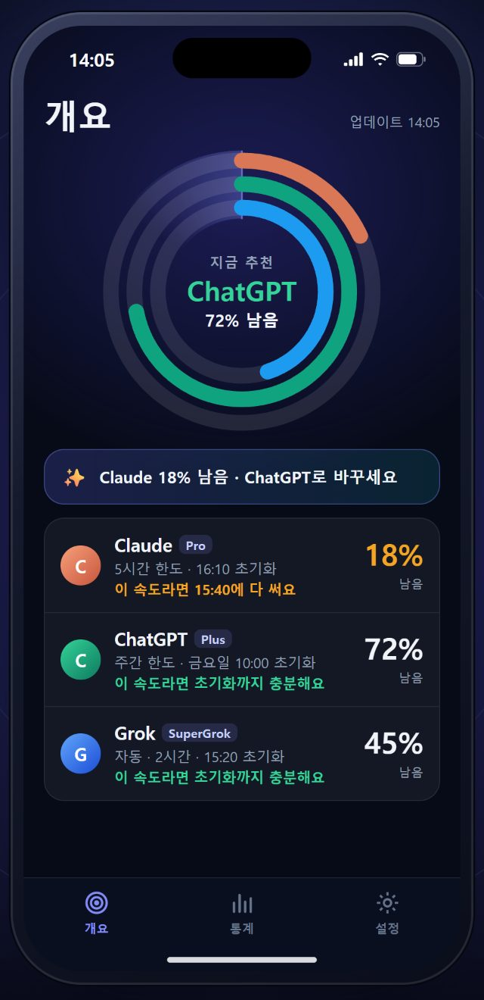
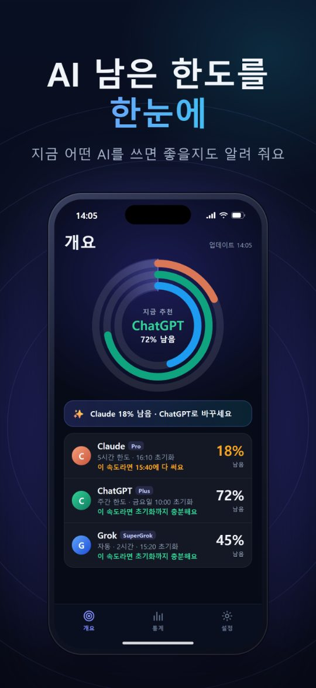
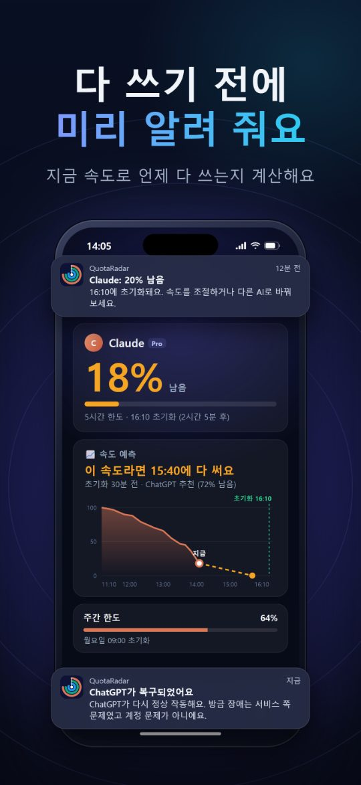
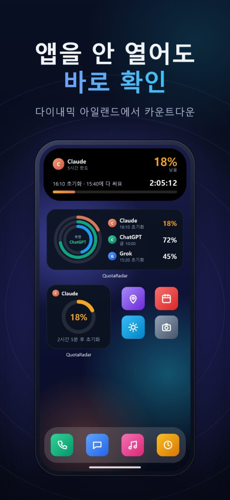
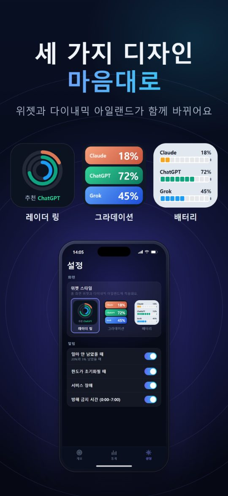
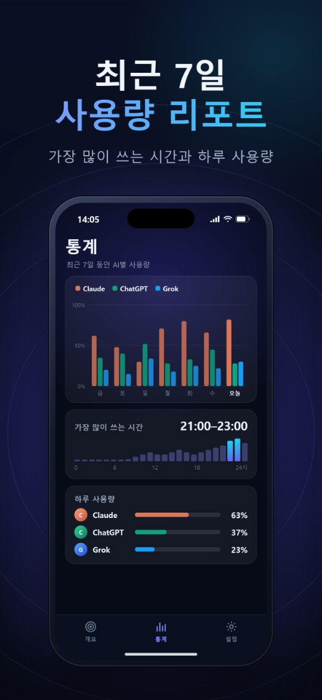
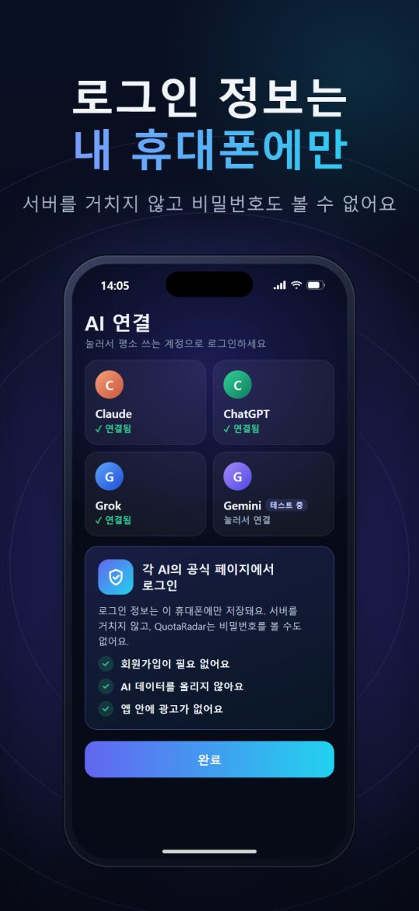
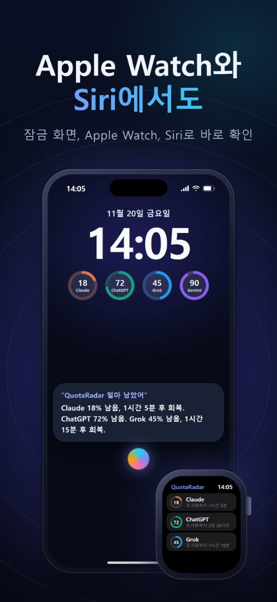

홈 화면, 잠금 화면, 다이내믹 아일랜드, Apple Watch에서 바로 확인하세요. 다 쓰기 전에 알려 주고, 지금 어떤 AI를 쓰면 좋을지도 알려 줘요.

AI 사용 한도를 대신 지켜보는 앱이에요. 매번 웹페이지를 열어 볼 필요도, 대화 도중 갑자기 막힐 일도 없어요.

레이더 링으로 AI별 남은 양과 초기화 시간을 보여 줘요. "지금 추천"이 쓸 AI를 골라 줘요. 같은 AI에 여러 계정도 가능해요.

속도 예측으로 언제 한도에 닿는지 계산해요. 20%와 5% 남았을 때 알림(변경 가능), 초기화와 서비스 장애도 알려 줘요.

홈 화면·잠금 화면 위젯과 다이내믹 아일랜드가 초기화까지 알아서 카운트다운해요.

레이더 링, 그라데이션, 배터리. 위젯과 다이내믹 아일랜드도 함께 바뀌어요.

최근 7일 동안 AI별 사용량, 가장 많이 쓰는 시간, 하루 평균 사용량.

각 AI의 공식 페이지에서 로그인해요. 서버를 거치지 않고, QuotaRadar는 비밀번호를 볼 수 없어요.

Apple Watch 앱과 컴플리케이션. "QuotaRadar 얼마 남았어"라고 말하면 Siri가 읽어 줘요.
같은 AI에 여러 계정(회사용, 개인용 등)을 추가할 수 있어요.
β 표시는 테스트 중인 서비스예요. QuotaRadar는 독립 앱이며 Anthropic, OpenAI, xAI, Google, Meta와 제휴하지 않았습니다. 각 이름은 해당 소유자의 상표입니다. 남은 한도는 각 서비스가 알려 주는 값입니다.
회원가입도 광고도 없어요
평생 사용 · 구독 없음
앱을 처음 연 날부터 3일 동안 정식 버전을 무료로 체험할 수 있어요. 가격은 지역의 App Store에 표시된 금액이며, 앱 안에서 구매해요.
iPhone, iPad, Apple Watch에서 사용할 수 있어요. Android 버전은 출시 예정이에요.
질문이나 의견은 지원 페이지를 보거나 sonia6891@gmail.com로 메일 주세요.